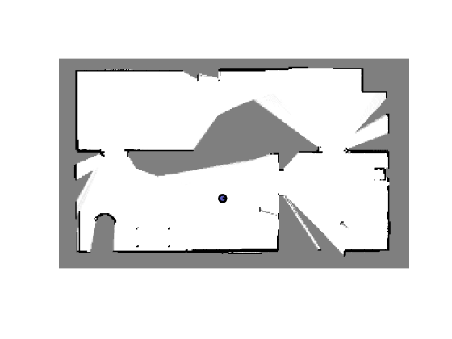

% ========= % ass3_q1.m % ========= % % This assignment will introduce you to the idea of first building an % occupancy grid then using that grid to estimate a robot's motion using a % particle filter. % % There are two questions to complete (5 marks each): % % Question 1: code occupancy mapping algorithm % Question 2: see ass3_q2.m % % Fill in the required sections of this script with your code, run it to % generate the requested plot/movie, then paste the plots into a short report % that includes a few comments about what you've observed. Append your % version of this script to the report. Hand in the report as a PDF file % and the two resulting AVI files from Questions 1 and 2. % % requires: basic Matlab, 'gazebo.mat' % % T D Barfoot, January 2016 % clear all; % set random seed for repeatability rng(1); % ========================== % load the dataset from file % ========================== % % ground truth poses: t_true x_true y_true theta_true % odometry measurements: t_odom v_odom omega_odom % laser scans: t_laser y_laser % laser range limits: r_min_laser r_max_laser % laser angle limits: phi_min_laser phi_max_laser % load gazebo.mat; % ======================================= % Question 1: build an occupancy grid map % ======================================= % % Write an occupancy grid mapping algorithm that builds the map from the % perfect ground-truth localization. Some of the setup is done for you % below. The resulting map should look like "ass2_q1_soln.png". You can % watch the movie "ass2_q1_soln.mp4" to see what the entire mapping process % should look like. At the end you will save your occupancy grid map to % the file "occmap.mat" for use in Question 2 of this assignment. % allocate a big 2D array for the occupancy grid ogres = 0.05; % resolution of occ grid ogxmin = -7; % minimum x value ogxmax = 8; % maximum x value ogymin = -3; % minimum y value ogymax = 6; % maximum y value ognx = (ogxmax-ogxmin)/ogres; % number of cells in x direction ogny = (ogymax-ogymin)/ogres; % number of cells in y direction oglo = zeros(ogny,ognx); % occupancy grid in log-odds format ogp = zeros(ogny,ognx); % occupancy grid in probability format % precalculate some quantities numodom = size(t_odom,1); npoints = size(y_laser,2); angles = linspace(phi_min_laser, phi_max_laser, npoints); dx = ogres*cos(angles); dy = ogres*sin(angles); % interpolate the noise-free ground-truth at the laser timestamps t_interp = linspace(t_true(1),t_true(numodom),numodom); x_interp = interp1(t_interp,x_true,t_laser); y_interp = interp1(t_interp,y_true,t_laser); theta_interp = interp1(t_interp,theta_true,t_laser); omega_interp = interp1(t_interp,omega_odom,t_laser); % set up the plotting/movie recording vid = VideoWriter('ass2_q1.avi'); open(vid); figure(1); clf; pcolor(ogp); colormap(1-gray); shading('flat'); axis equal; axis off; M = getframe; writeVideo(vid,M); BETA = 0.5; ALPHA = 3; % loop over laser scans (every fifth) for t=1:5:size(t_laser,1) % ------insert your occupancy grid mapping algorithm here------ for i = 1:npoints if ~isnan(y_laser(t,i)) && r_min_laser < y_laser(t,i) && y_laser(t,i) < r_max_laser %convert to map frame x_start = (x_interp(t)-ogxmin); y_start = (y_interp(t)-ogymin); range_mes = y_laser(t,i); cur_angle = angles(i) + theta_interp(t); % x_end and y_end calculation x_end = x_start + range_mes * cos(cur_angle); y_end = y_start + range_mes * sin(cur_angle); % convert to map coordinates x_start = round(x_start/ogres); y_start = round(y_start/ogres); x_end = round(x_end/ogres); y_end = round(y_end/ogres); % ray trace [rr, cc] = ray_trace(x_start, y_start, x_end, y_end); % shape [row_bound, col_bound] = size(oglo); % iterate over each cell index pair for j=1:size(rr, 1) % skip over any instances where index is outside map if rr(j) > row_bound || cc(j) > col_bound || rr(j) <= 0 || ... cc(j) <= 0 continue end % update log-odds if j < (size(rr,1)) % all cells except last cell are set as free oglo(rr(j),cc(j)) = oglo(rr(j),cc(j)) - BETA; else % last cell is set as occupied oglo(rr(j),cc(j)) = oglo(rr(j),cc(j)) + ALPHA; end end end end oglo; % recovering probabilities from log-odds ogp = exp(oglo)./(1 + exp(oglo)); % ------end of your occupancy grid mapping algorithm------- % draw the map clf; pcolor(ogp); colormap(1-gray); shading('flat'); axis equal; axis off; % draw the robot hold on; x = (x_interp(t)-ogxmin)/ogres; y = (y_interp(t)-ogymin)/ogres; th = theta_interp(t); r = 0.15/ogres; set(rectangle( 'Position', [x-r y-r 2*r 2*r], 'Curvature', [1 1]),'LineWidth',2,'FaceColor',[0.35 0.35 0.75]); set(plot([x x+r*cos(th)]', [y y+r*sin(th)]', 'k-'),'LineWidth',2); % save the video frame M = getframe; writeVideo(vid,M); pause(0.1); end close(vid); print -dpng ass2_q1.png save occmap.mat ogres ogxmin ogxmax ogymin ogymax ognx ogny oglo ogp; % given two points in a matrix, returns the diagonal indices function [rr, cc] = ray_trace(x1, y1, x2, y2) % Initialize the return arrays rr = []; cc = []; % Calculate the x and y distances between the two points dx = abs(x2 - x1); dy = abs(y2 - y1); % Calculate the step size for the x and y axes if x1 < x2 sx = 1; else sx = -1; end if y1 < y2 sy = 1; else sy = -1; end % Initialize the error term err = dx - dy; % Traverse the line using Bresenham's algorithm while true % Add the current point to the return arrays rr = [rr; y1]; cc = [cc; x1]; % Check if we've reached the end point if x1 == x2 && y1 == y2 break; end % Update the error term e2 = 2*err; if e2 > -dy err = err - dy; x1 = x1 + sx; end if e2 < dx err = err + dx; y1 = y1 + sy; end end end